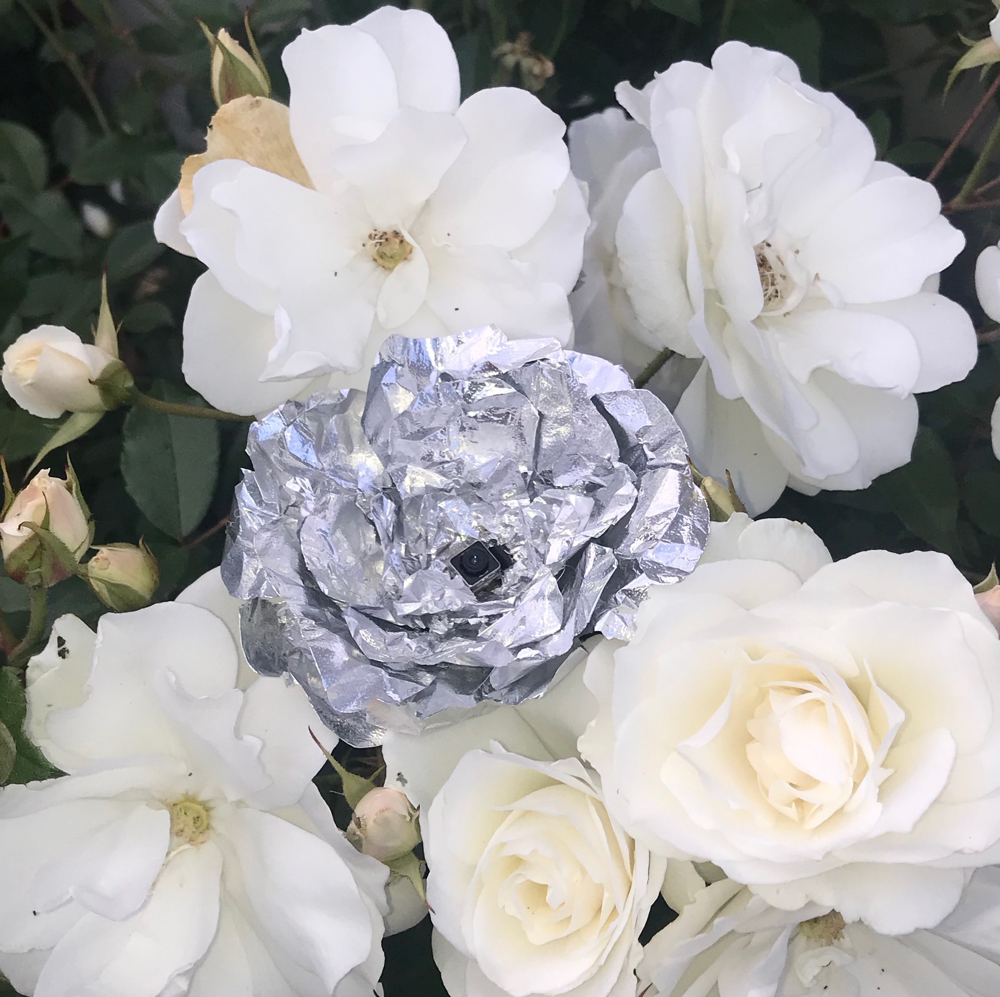

if given the chance would i extend my life, perhaps to make up this lost time?
well, only if you decide to do the same. i would hate to look in the mirror and see my reflection the same as it is today, while i watch your hairline recede, your eyes sink deeper and deeper into your skull, your hands become gnarled and wrinkled and your nails grow thick and yellow.
i would hate to watch as your spine slowly slouches forward until you need to use a cane to walk outside, until you decide to stop walking outside at all.
i would hate to know how your smell changes—a thing that was once comforting transmogrified into claustrophobic--how it would choke a room.
i would hate to watch you forget about me, the once gentle looks you gave me slowly becoming deeply foreign as your eyes gloss over from cataracts and your memories fade into dreams that fade into nothing as your neurons dissipate into who-knows-what.
i think it would be really cool to have a robotic arm though.
